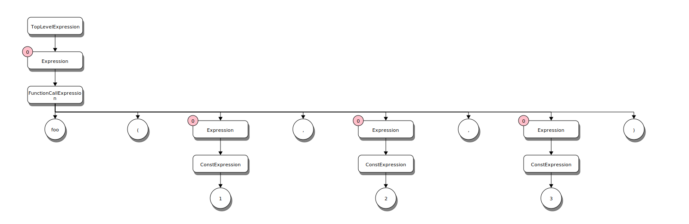

2. Kaleidoscope: Implementing the parser
The chapter 2 sample doesn't actually generate any code. Instead it focuses on the general structure of the samples and parsing of the language. The sample for this chapter enables all language features to allow exploring the language and how it is parsed to help better understand the rest of the chapters better. It is hoped that users of this library find this helpful.
The Lllvm.NET version of Kaleidoscope leverages ANTLR4 to parse the language into a parse tree. This has several advantages including logical isolation of the parsing and code generation. Additionally, it provides a single formal definition of the grammar for the language. Understanding the language grammar from reading the LVM tutorials and source was a difficult task since it isn't formally defined in one place. (There are some EBNF like comments in the official LLVM tutorial code but it is spread around without much real discussion of the language the tutorials guide you to implement)
Formal Grammar
Lexer symbols
The Kaleidoscope lexer consists of several tokens and is defined in the Kaleidoscope.g4 grammar file.
// Lexer Rules -------
fragment NonZeroDecimalDigit_: [1-9];
fragment DecimalDigit_: [0-9];
fragment Digits_: '0' | [1-9][0-9]*;
fragment EndOfFile_: '\u0000' | '\u001A';
fragment EndOfLine_
: ('\r' '\n')
| ('\r' |'\n' | '\u2028' | '\u2029')
| EndOfFile_
;
LPAREN: '(';
RPAREN: ')';
COMMA: ',';
SEMICOLON: ';';
DEF: 'def';
EXTERN: 'extern';
ASSIGN:'=';
ASTERISK: '*';
PLUS: '+';
MINUS:'-';
LEFTANGLE: '<';
SLASH: '/';
EXCLAMATION: '!';
PERCENT: '%';
AMPERSAND:'&';
PERIOD:'.';
COLON: ':';
RIGHTANGLE: '>';
QMARK: '?';
ATSIGN: '@';
BACKSLASH: '\\';
CARET: '^';
UNDERSCORE: '_';
VBAR: '|';
EQUALEQUAL: '==';
NOTEQUAL: '!=';
PLUSPLUS: '++';
MINUSMINUS: '--';
IF: {FeatureControlFlow}? 'if';
THEN: {FeatureControlFlow}? 'then';
ELSE: {FeatureControlFlow}? 'else';
FOR: {FeatureControlFlow}? 'for';
IN: {FeatureControlFlow}? 'in';
VAR: {FeatureMutableVars}? 'var';
UNARY: {FeatureUserOperators}? 'unary';
BINARY: {FeatureUserOperators}? 'binary';
LineComment: '#' ~[\r\n]* EndOfLine_ -> skip;
WhiteSpace: [ \t\r\n\f]+ -> skip;
Identifier: [a-zA-Z][a-zA-Z0-9]*;
Number: Digits_ ('.' DecimalDigit_+)?;
This includes basic numeric patterns as well as Identifiers and the symbols allowed for operators and keywords for the language. Subsequent chapters will introduce the meaning and use of each of these.
Language Feature Defined Keywords
Chapters 5-7 each introduce new language features that introduce new keywords into the language. In order to maintain a single grammar for all chapters the lexer uses a technique of ANTLR4 called Semantic Predicates. These are basically boolean expressions that determine if a given rule should be applied while parsing the input language. These are applied to the rules for the feature specific keywords. Thus, at runtime, if a given feature is disabled then the keyword is not recognized.
IF: {FeatureControlFlow}? 'if';
THEN: {FeatureControlFlow}? 'then';
ELSE: {FeatureControlFlow}? 'else';
FOR: {FeatureControlFlow}? 'for';
IN: {FeatureControlFlow}? 'in';
VAR: {FeatureMutableVars}? 'var';
UNARY: {FeatureUserOperators}? 'unary';
BINARY: {FeatureUserOperators}? 'binary';
Note
There are some important distinctions in the Llvm.NET implementation of Kaleidoscope, with regard to the symbols allowed for user defined operators. The official LLVM version allows defining an operator '=', (in chapter 6). However, in Chapter 7, when Mutable variables are introduced the '=' is reserved by the language for assignment. Thus, any code written for chapter 6 with a user defined '=' operator would not work in later versions. Thus, the Llvm.NET version reserves the '=' in all versions, but uses the '==' operator for equality comparisons. (It also adds the '++' and '--' tokens as user operators [The official LLVM implementation only allows a single character as the operator lexeme])
Additionally the Llvm.NET implementation adds the built-in '^' operator for exponentiation.
Parser
The parser, like the lexer, uses Semantic Predicates, which allows for dynamic adaptation of the grammar and parser to handle variations or versions of the language. The Sample code uses the predicates to selectively enable language features as the chapters progress, without needing to change the grammar or generated parser code. The parser code provides a simple means of expressing the language support level. Semantic predicates play a vital role in supporting user defined operators with user defined precedence.
Parser grammar
A full tutorial on ANTLR is beyond the scope of this article but the basics should be familiar enough to anyone acquainted with EBNF form to make enough sense out of it. Don't worry too much about the details at this point as subsequent chapters will cover salient points as new features are enabled.
Operators
In order to support the parser detecting attempts to overload built-in operators and to handle the fact that some operators don't make any sense as unary operators (e.g. you can't create a user defined unary '=' operator. Technically, you could implement that but it would make for some confusing code. If you really like hard to read and comprehend code there are other languages better suited to that end 8^) )
To manage detection of appropriate operator tokens the grammar uses a set of parser rules that group the operator tokens by their allowed kinds. This allows subsequent rules to simply refer to the kind of operator expected and not worry about the actual tokens involved. It also allows the parser to detect syntax and usage errors like trying to create a user defined '+' operator.
// built-in operator symbols
builtinop
: ASSIGN
| ASTERISK
| PLUS
| MINUS
| SLASH
| LEFTANGLE
| CARET
;
// Allowed user defined binary symbols
userdefinedop
: EXCLAMATION
| PERCENT
| AMPERSAND
| PERIOD
| COLON
| RIGHTANGLE
| QMARK
| ATSIGN
| BACKSLASH
| UNDERSCORE
| VBAR
| EQUALEQUAL
| NOTEQUAL
| PLUSPLUS
| MINUSMINUS
;
// unary ops can re-use built-in binop symbols (Except ASSIGN)
unaryop
: ASTERISK
| PLUS
| MINUS
| SLASH
| LEFTANGLE
| CARET
| EXCLAMATION
| PERCENT
| AMPERSAND
| PERIOD
| COLON
| RIGHTANGLE
| QMARK
| ATSIGN
| BACKSLASH
| UNDERSCORE
| VBAR
| EQUALEQUAL
| NOTEQUAL
| PLUSPLUS
| MINUSMINUS
;
// All binary operators
binaryop
: ASSIGN
| ASTERISK
| PLUS
| MINUS
| SLASH
| LEFTANGLE
| CARET
| EXCLAMATION
| PERCENT
| AMPERSAND
| PERIOD
| COLON
| RIGHTANGLE
| QMARK
| ATSIGN
| BACKSLASH
| UNDERSCORE
| VBAR
| EQUALEQUAL
| NOTEQUAL
| PLUSPLUS
| MINUSMINUS
;
Initializers
The Initializers rule provides a way to handle a common sequence in the language in multiple different contexts (sort of like a function in most programming languages, in fact, ANTLR rules are implemented in the generated parser as methods).
// pull the initializer out to a distinct rule so it is easier to get at
// the list of initializers when walking the parse tree
initializer
: Identifier (ASSIGN expression[0])?
;
Primary Expressions (Atoms)
There are a number of primary expressions (also known as 'Atoms') that are not left recursive in their definition. These are split out to a distinct rule to aid in the support of left recursion and the need for user defined operator precedence.
// Non Left recursive expressions (a.k.a. atoms)
primaryExpression
: LPAREN expression[0] RPAREN # ParenExpression
| Identifier LPAREN (expression[0] (COMMA expression[0])*)? RPAREN # FunctionCallExpression
| VAR initializer (COMMA initializer)* IN expression[0] # VarInExpression
| IF expression[0] THEN expression[0] ELSE expression[0] # ConditionalExpression
| FOR initializer COMMA expression[0] (COMMA expression[0])? IN expression[0] # ForExpression
| {IsPrefixOp()}? unaryop expression[0] # UnaryOpExpression
| Identifier # VariableExpression
| Number # ConstExpression
;
Let's look at each of these in turn to get a better understanding of the language.
ParenExpression
LPAREN expression[0] RPAREN
This is a simple rule for sub-expressions within parenthesis for example: (1+2)/3 the parenthesis groups
the addition so that it occurs before the division since, normally the precedence of division is higher.
The parse tree for that expression looks like this:

FunctionCallExpression
Identifier LPAREN (expression[0] (COMMA expression[0])*)? RPAREN
This rule covers a function call which can have 0 or more comma delimited arguments. The parse tree
for the call foo(1, 2, 3); is:

VarInExpression
VAR initializer (COMMA initializer)* IN expression[0]
The VarInExpression rule provides variable declaration, with optional initialization. The scope of the
variables is that of the expression on the right of the in keyword. The var ... in ... expression is
in many ways like a declaration of an inline function. The variables declared are scoped to the internal
implementation of the function. Once the function produces the return value the variables no longer exist.
ConditionalExpression
IF expression[0] THEN expression[0] ELSE expression[0]
Conditional expressions use the very common and familiar if-then-else syntax and semantics with one
notable unique quality. In Kaleidoscope every language construct is an expression, there are no statements.
Expressions all produce a value. So the result of the conditional expression is the result of the
sub-expression selected based on the condition. The condition value is computed and if the result == 0.0
(false) the else expression is used to produce the final result. Otherwise, the then expression is
executed to produce the result. Thus, the actual semantics are more like the ternary operator found C and
other languages:
condition ? thenExpression : elseExpression
Example:
def fib(x)
if x < 3 then
1
else
fib(x-1)+fib(x-2);
ForInExpression
The ForInExpression provides support for classic for loop constructs. In particular it provides a variable scope for a loop value, a condition to test when to exit the loop and an optional step value for incrementing the loop value (default is 1.0).
extern putchard(char);
def printstar(n)
for i = 1, i < n, 1.0 in
putchard(42); # ascii 42 = '*'
# print 100 '*' characters
printstar(100);
Note
Technically, there are no statements in Kaleidoscope, everything is an expression and has a value. putchard() implicitly returns a value as does printstar(). (e.g. there is no void return - ALL functions implicitly return a floating point value, even if it is always 0.0).
For loops with mutable values support in the language may provide a result that isn't always 0.0, for example:
# Define ':' for sequencing: as a low-precedence operator that ignores operands
# and just returns the RHS.
def binary : 1 (x y) y;
# Recursive fib, we could do this before.
def fib(x)
if (x < 3) then
1
else
fib(x-1)+fib(x-2);
# Iterative fib.
def fibi(x)
var a = 1, b = 1, c in
(for i = 3, i < x in
c = a + b :
a = b :
b = c) :
b;
# Call it.
fibi(10);
Parse Tree
ANTLR produces a low level parse tree with nodes corresponding to each of the rules defined in the grammar. In most cases this is extremely verbose and more details than is actually needed for generating code. (Though, it can be used as-is in some cases.) Typically code generation will walk the parse tree to provide a simpler Abstract Syntax Tree that represents the actual language concepts independent of the syntax of the language. ANTLR will generate a parser based on the grammar description input file. This generated parser (and lexer) includes a context type for each rule of the grammar. The C# target for ANTLR generates these types as partial classes so they are extensible from the parser assembly without needing to derive a new type or use virtual methods etc. Thus, the Kaleidoscope.Grammar assembly contains partial class extensions that provide simpler property accessors and support methods to aid is generating the AST.
See Kaleidoscope Parse Tree Examples for more information and example diagrams of the parse tree for various language constructs.
Abstract Syntax Tree (AST)
To further simplify code generators the Kaleidoscope.Runtime library contains the AstBuilder type that is
an ANTLR parse tree visitor. AstBuilder will convert a raw ANTLR IParseTree into an IEnumerable<IFunctionNode>.
That is, it visits the declarations and definitions in the parse tree to produce an ordered sequence of declarations
and definitions as they appeared in the source. For interactive modes - the sequence will have only a single element.
However, when parsing a whole source file, the parse tree may contain multiple declarations and definitions.
The Kaleidoscope AST is a means of simplifying the original parse tree into constructs that are easy for the code generation to use directly. In the case of Kaleidoscope there are a few types of nodes that are used to generate LLVM IR. The AstBuilder class is responsible for generating an AST from an ANTLR4 parse tree.
The major simplifying transformations performed in building the AST are:
- Convert top-level functions to a pair of FunctionDeclaration and FunctionDefinition
- Convert user defined operator definition to simple FunctionDefinition with a special name for the operator
- Convert user defined operator expressions into simple function calls to the operator function
Note
An interesting consequence of these transformations into the AST form is that the concept of user defined operators no longer exists in the AST! The AST only deals in function declarations, definitions and the built-in operators. All issues of precedence are implicitly resolved in the ordering of the nodes in the AST. Thus, the code generation doesn't need to consider the issue of user defined operators or operator precedence at all. (Chapter 6 covers the details of user defined operators)
Basic Application Architecture
Generally speaking there are four main components to all of the sample chapter applications.
- The main driver application (e.g. program.cs)
- The parser (e.g. Kaleidoscope.Grammar assembly)
- Runtime support (e.g. Kaliedoscope.Runtime)
- The code generator (e.g. CodeGenerator.cs)
Driver
While each chapter is a bit different from the others. Many of the chapters are virtually identical for the driver. In particular Chapters 3-7 only really differ in the language level support.
var parser = new Parser( LanguageFeatureLevel );
// Create Observable chain to parse input lines from console into AST Nodes
var replSeq = parser.Parse( Console.In.ToObservableStatements( ShowPrompt ), ShowCodeGenError );
// Subscribe to the sequence the sequence
using( replSeq.Subscribe( ShowResults ) )
{
}
Console.WriteLine( "Bye!" );
The ParserStack contains the support for parsing the Kaleidoscope language from the REPL loop interactive input. The stack also maintains the global state of the runtime, which controls the language features enabled, and if user defined operators are enabled, contains the operators defined along with their precedence.
After the parser is created an observable sequence of statements is created for the parser to process. The parser produces a sequence of AST nodes. This effectively adds Rx.NET operators to the chain of operators to produce the parsed nodes from the input text. After construction the sequence is subscribed to call the ShowResults function for each result.
This use of Observable sequences is a bit of a different approach to things for running an interpreter Read, Evaluate Print Loop, but once you get your head around it, the sequence provides a nice clean and flexible mechanism for building a pipeline of transformations from the text input into the result output.
Processing generated results
The calling application will generally subscribe to the observable sequence with a ShowResults function to show the
results of the generation in some fashion. For the basic samples (Chapter 3-7) it indicates the value of any JITed
and executed top level expressions, or the name of any functions defined. Chapter 2 has additional support for
showing an XML representation of the tree but the same basic pattern applies. This, helps to keep the samples
consistent and as similar as possible to allow direct file comparisons to show the changes for a particular feature.
The separation of concerns also aids in making the grammar, runtime and code generation unit-testable without the
driver. (Although that isn't implemented yet - it is intended for the future to help broaden testing of Llvm.NET to
more scenarios and catch breaking issues quicker.)
private static void ShowResults( IAstNode node )
{
Console.WriteLine( "Parsed {0}", node.GetType( ).Name );
}
Special case for Chapter 2
Chapter 2 sample code, while still following the general patterns used in all of the chapters, is a bit unique, it doesn't actually use Lllvm.NET at all! Instead, it is only focused on the language and parsing. This helps in understanding the basic patterns of the code. Furthermore, this chapter serves as an aid in understanding the language itself. Of particular use is the ability to generate DGML and blockdiag representations of the parse tree for a given parse.
Note
All of the diagrams in these tutorials were created by generating the blockdiag files and then producing the SVG files from that. Having a nice visual representation of a parse tree result is helpful to understanding the parsing and various parse tree node types.
The visual graph is also immensely valuable when making changes to the grammar so you can see the results of a parse and more readily understand why something isn't right. In fact, this feature was created to help track down bugs in the parsing for user defined operator precedence that was difficult to figure out. Once the visualization was available it became quite easy to see the problems. Thus, Chapter 2 is both a simple introductory example and a tool for use when doing more advanced language tweaking or extension.